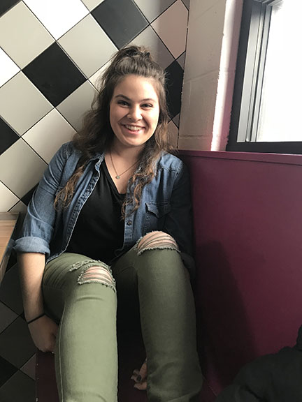

Julia is a junior, dual major at Mizzou studing Photojournalism and German. Originally from Omaha, NE, Julia not only had the opportunity to travel to University, but she has also traveled while in University. The most recent trips include a summer spent in Malaysia and a visit to Seoul, South Korea during spring break. She hopes that her career will take her to faraway places and connect her with interesting people.
hi
At any given moment the urge to sing, "The Lion Sleeps tonight" ....is just a whim away, a whim away, a whim away.
Please contact Julia Hansen.
